Control Panels: The Heart of Manufacturing Sites.
Evolution in control panels results in large evolution in production facilities.
And if control panel design, control panel manufacturing processes, and human interaction with them are innovated, control panel manufacturing becomes simpler and takes a leap forward.
OMRON will continue to achieve a control panel evolution and process innovation through many undertakings starting with the shared Value Design for Panel *1 concept for the specifications of products used in control panels.
Building Automation
Industrial Automation
Power Automation & Safety


Bangladesh Distributor
K8DT-PZ
Three-phase Voltage, Asymmetry, and Phase-sequence Phase-loss Relay
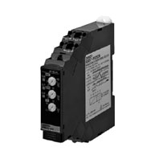
Our Value Design Products Increase the Value of Your Control Panels. Protect motors and other equipment from unstable voltages in the power supply system. Detect overvoltages, undervoltages, voltage asymmetry, phase sequence, and phase loss for three-phase power supplies.
about this Product Family
Related Contents
- Measuring / Motor Protective Relays
- Features
- Lineup
- Specifications
- Dimensions
- Catalog
last update: April 01, 2016
Achieve Downsizing Control Panels and Reducing Wiring
New Value For Control Panels
*1 Value Design for Panel
Our shared Value Design for Panel (herein after referred to as "Value Design") concept for the specifications of products used in control panels will create new value to our customer’s control panels.
Combining multiple products that share the Value Design concept will further increase the value provided to control panels.
Protect Your Important Equipment from the Chance of Troubles
Do You Face These Problems?
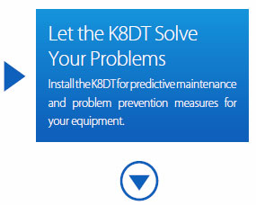
1. Alarms do not occur before equipment is damaged.
2. Protection is necessary because of poor power supply quality
overseas.
3. Preventing excessive temperature increases in heaters is
necessary.
4. Control panels for electrode-based water level control must
be downsized.
5. Measuring and Monitoring Relays that conform to international
safety standards are necessary.
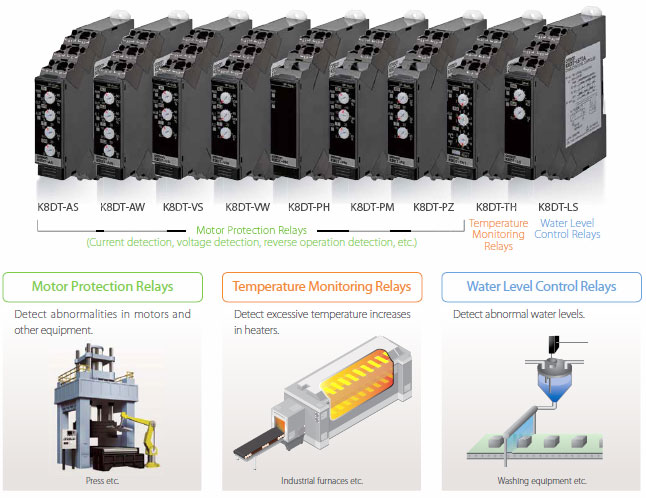
What Are K8DT Measuring and Monitoring Relays? These Relays function as alarms for which you can set a threshold value
[Input signal*] A voltage, current, temperature (thermocouple or platinum resistance thermometer), or water level
(electrode) can be input.
[Alarm output] You can select a relay or transistor output.
*There are different models for different inputs.
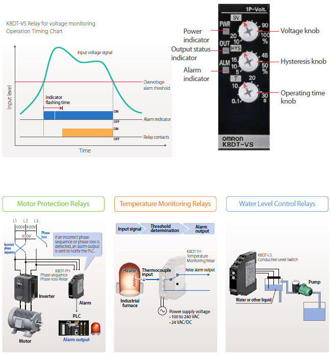
Long-term Contact Reliability Contributes to Visualization of Fault Status
Industry First*: Models with Transistor Outputs
*According to OMRON investigation in November 2015.
Use transistor outputs to take advantage of the long-term contact reliability.
The operating frequency of Measuring and Monitoring Relays is low, which means the surfaces of relay contacts can deteriorate and reduces reliability. Particularly for microcomputer board and PLC inputs, a microcurrent of 5 mA or less for switching reliability is required, making transistor outputs superior.
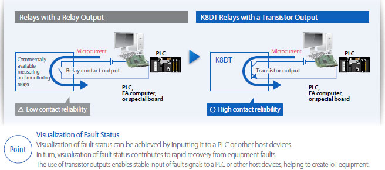
Low Power Consumption Design Enables Side-by-side Mounting
The power consumption has been greatly reduced in comparison with commercially available measuring and monitoring relays.
A lower power consumption means that internal heat generation is suppressed, which enables side-by-side mounting.
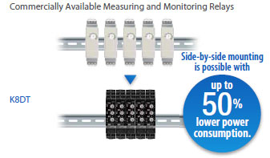
Reliability Even in Poor Noise Environments
There is no heat generated by high-frequency noise, which enhances reliability.
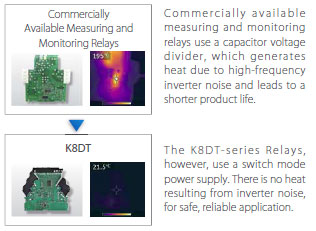
Control Panel Downsizing and Reduced Wiring; Flexible Layout with a 17.5-mm Width
This Is the Shape That Resulted from Efforts to Downsize Panels and Reduce Wiring.
• The slim body is only 17.5 mm wide to enable control panel downsizing.
• To simplify wiring, Push-In Plus terminal blocks are positioned at the front.
• To simplify changing settings, the setting switches were placed on the front.
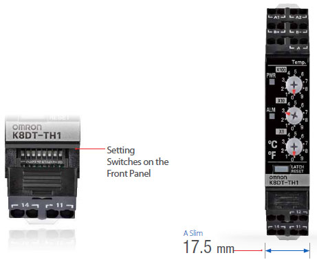
Push-In Plus Terminal Blocks for Easy Wiring
Just Insert Wires: No Tools Required Now you can use Push-In Plus terminal blocks to reduce the time and work involved in wiring.
Greatly Reduce Wiring Work with Push-In Plus Terminal Blocks
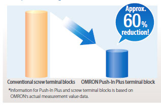
*Information for Push-In Plus and screw terminal blocks is based on OMRON's actual measurement value data.
Wiring Possible with Stranded Wires
You can insert wires with pin terminals or ferrules, or you can also insert solid wires or stranded wires.
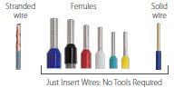
Application Examples:
Motor Protection
K8DT-A[]/-V[]/-P[]
[Application] Ideal for monitoring for error trends in motors and other equipment
(e.g., equipment with three-phase motors, expensive equipment, and equipment with compressors).
[Features] High reliability for worry-free application.
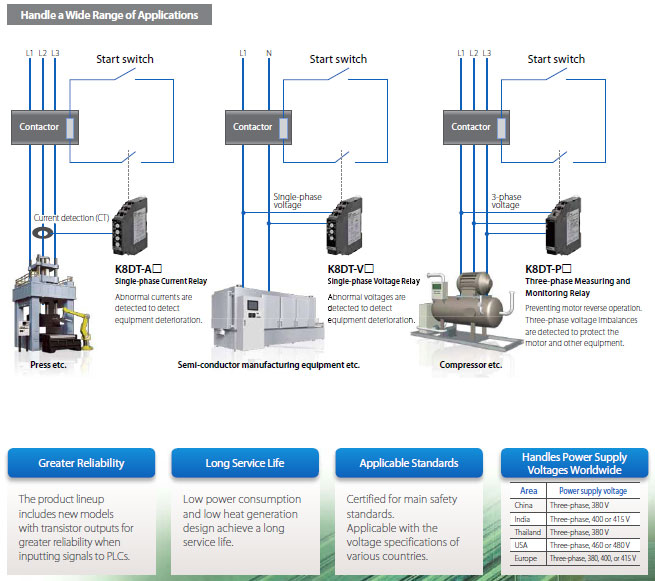
last update: April 01, 2016